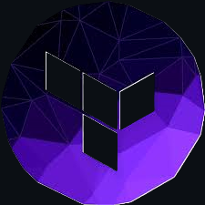
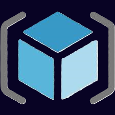

Ruslan Dashkin
DevOps & Cloud Engineer
Building robust and scalable cloud infrastructures using AWS, Terraform, and more.
AWS Solutions

IaC Automation

Infrastructure
Projects
HelmKube Autowake
AWS · Terraform · Lambda · k3s · GitHub Actions
Production-style k3s cluster with on-demand wake & auto-sleep.
ML Serverless (SageMaker)
AWS · Lambda · SageMaker Serverless · CloudFront
End-to-end serverless ML app with image classification.
AWS Multi-Tier Infra
Terraform · EC2 · RDS · S3 · CloudFront · Route53
Automated multi-tier AWS environment with wake/sleep flow.
Docker ECS Deployment
Docker · ECS Fargate · ECR · GitHub Actions
CI/CD pipeline deploying a containerized app to ECS Fargate.
RideBot Infra
AWS Lambda · DynamoDB · Telegram Bot · Terraform
Serverless backend for a real-time, location-based ride bot.
RD Service Pros Website
S3 · CloudFront · Terraform · OIDC CI/CD
Production static website for RD Service Pros with full IaC.
CI/CD Pipeline for App Deployment
GitHub Actions · Docker · AWS · Terraform
Automated pipeline for packaging, testing, and deploying applications with Terraform integration.
Rusets Portfolio Website
S3 · CloudFront · Terraform · GitHub Actions · OIDC
Personal DevOps portfolio website with full IaC deployment pipeline.